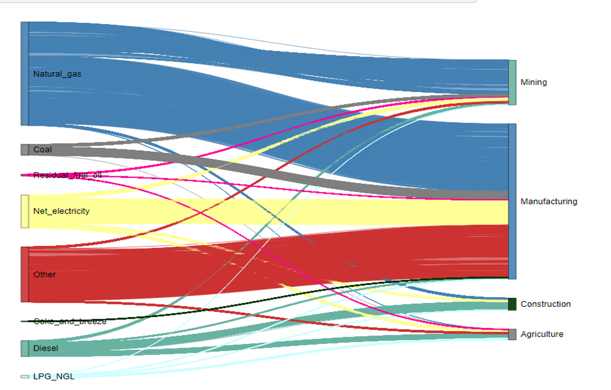

Since the beginning of the Industrial Revolution in the mid-18th century, the
consumption of fossil fuels for the production of energy has steadily and nearly exponentially risen,
and along with it the emissions of carbon dioxide.
Future emissions will depend on international treaties, national policies,
and individual behavior.
Anthropogenic emissions of carbon dioxide have
led to a steady rise in the atmospheric concentration of CO2 from about 278 ppm
before the Industrial Revolution to about 414 ppm in 2020.
Future concentrations depend on the emissions pathway chosen by humankind.
Carbon dioxide is the primary greenhouse gas. Its increasing concentration has led to
an increase in temperatures across the globe.
Future temperatures will depend on the emissions pathway.
Shown are global average temperatures in degrees Celsius
relative to their average between 1986 and 2005.
The goal of the Paris Agreement (2015) is to limit global warming to well below 2,
preferably to 1.5 degrees Celsius, compared to pre-industrial levels.
Only the low and medium low emission paths will meet this goal.
TODO:
Colors should be different (e.g., black for historical,
blue to red for emissions paths)
put source into graphs?
The amount of CO2 per energy produced depends on the type of fuel. It is given
here in units of pounds of CO2 emitted per million British Thermal Units (BTU).
The higher the hydrogen to carbon ratio in the fuel, the lower the CO2 emissions.
Coal is primarily carbon, whereas natural gas (methane, CH4) has an H:C ratio of 4.
Replacing coal-fired power plants with gas-fired ones cuts CO2 emissions by
almost 50 percent for the same amount of energy produced.
Electricity generation from nuclear power plants and renewable energy
(hydroelectric, wind, solar, geothermal) does not cause CO2 emissions at the
time of electricity generation, but is usually associated with indirect emissions,
either from producing wind turbines or solar panels, or during the mining and
processing of uranium fuel.
Source: EIA
TODO: Improve labeling (larger font sizes, horizontal on x-axis), put source into graph
TODO: Improve labeling
The amount of energy in mmBTU's each county consumed in 2016. A diverging-log scale is used to highlight the lowest and highest electricity consumers
TODO:
The size of the connection implies the amount of usage of a kind of energy to a category of a sector.
TODO:
TODO: Consider the readability of label and opacity of the connection due to the big
size of the data. It should be linked to county selector in map chart.